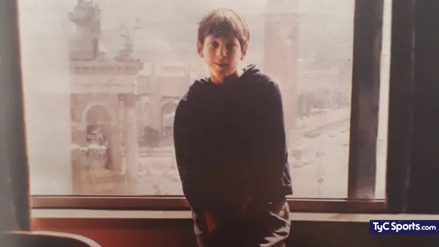
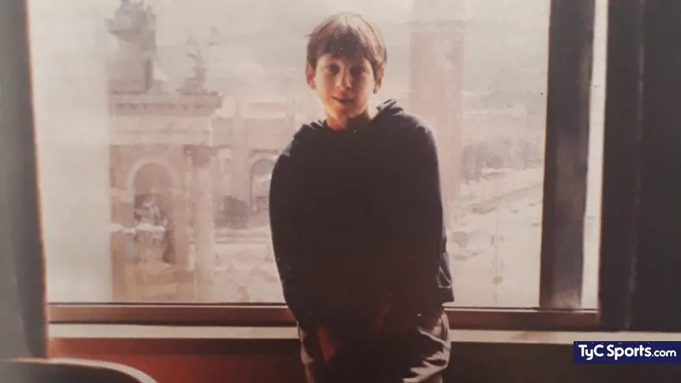

Lionel Andres Messi Cuccitini: nació el 24 de junio de 1987 en el Hospital Italiano Garibaldi de la ciudad de Rosario, en la provincia de Santa Fe. Es el tercer hijo de Jorge Horacio Messi y Celia María Cuccittini. Fue su abuela materna, Celia, la que lo alentó a dedicarse al fútbol, por lo que él le agradece señalando al cielo con las dos manos tras convertir un gol. En 1994, empezó a entrenarse en las divisiones inferiores de Newell's Old Boys.
 

En 2001, Messi comenzó a entrenar con el Infantil A de Rodolfo Borrell, pero luego lo pasaron al Infantil B, dirigido por Xavi Llorens, donde jugaba como media punta o extremo izquierdo. Al ser extranjero, no podía participar en partidos oficiales, pero sí en amistosos.